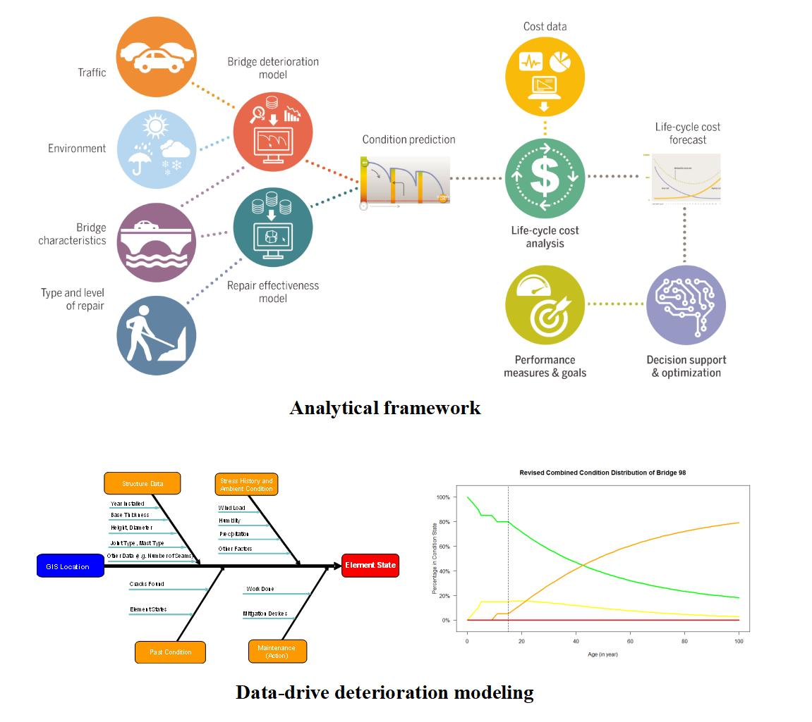
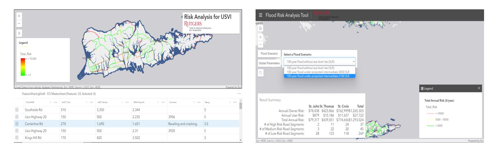
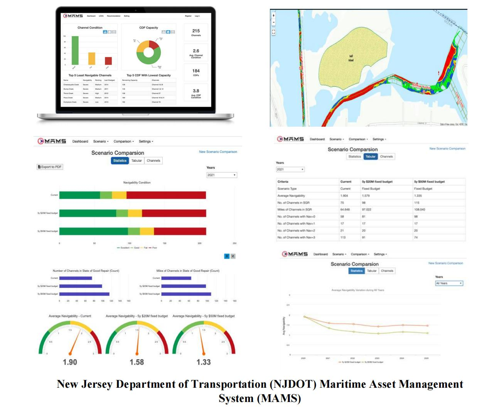
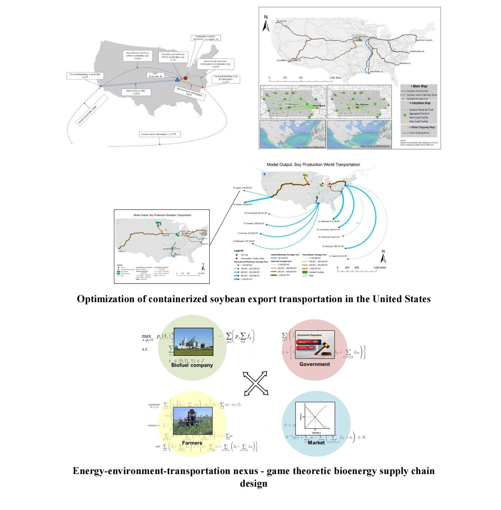
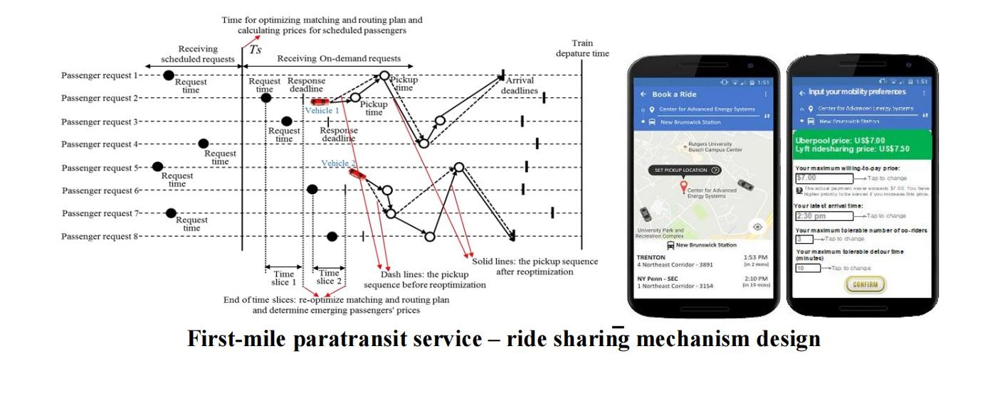

Topic1: Digitalization and Intelligent Transportation Infrastructure Asset Management
Instance1: Bridge and ancillary structure asset management
Instance2: Risk-based transportation asset management and resilience planning
Instance3: Maritime asset management framework and decision support tool
Topic2: Multi-Modal, Complex Transportation Systems Network Modeling
Instance1: Freight logistics system modeling and supply chain network design
Instance2: Smart Mobility
